Redesigning CSUMB
Visual thinking • Creative Problem Solving • Graphic Design • Branding and Identity
ABOUT THE PROJECT
Towards the end of my 2nd year at CSUMB, the university went through a major rebrand under the supervision of then President, Vanya Quiñones. The rebrand was met with mixed reception, with many design students feeling unfairly excluded from the process. While students cannot manage/ create a whole brand, many at least wished for a chance.
TOOLS
Adobe Illustrator, Adobe Photoshop, Medibang Paint
DURATION
One Month

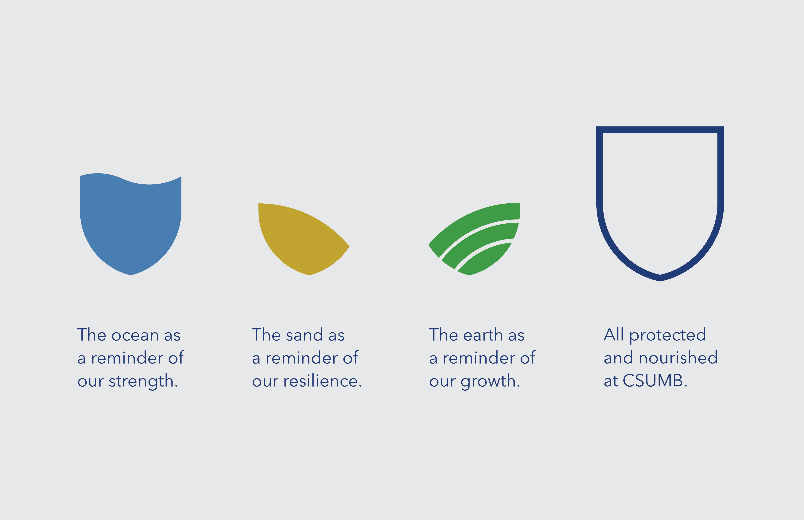
NOTES
While many agreed that the CSUMB rebrand was necessary, the biggest complaints heard especially from design students was the overall “corporate” look of the new logo. The simple swish in the background and the details in the letter O were not strong enough elements of a brand. The school has many incredible features, like its intensive research program, its flourishing student community, or its proximity to the beach, none of which were highlighted upon in the final logo.
One element I really liked from the original CSUMB brand identity was their focus on their environment as it is a huge piece of the school and it’s identity. I brought back those elements through the logo and color palette with minor changes to highlight it’s importance in the school and it’s history.
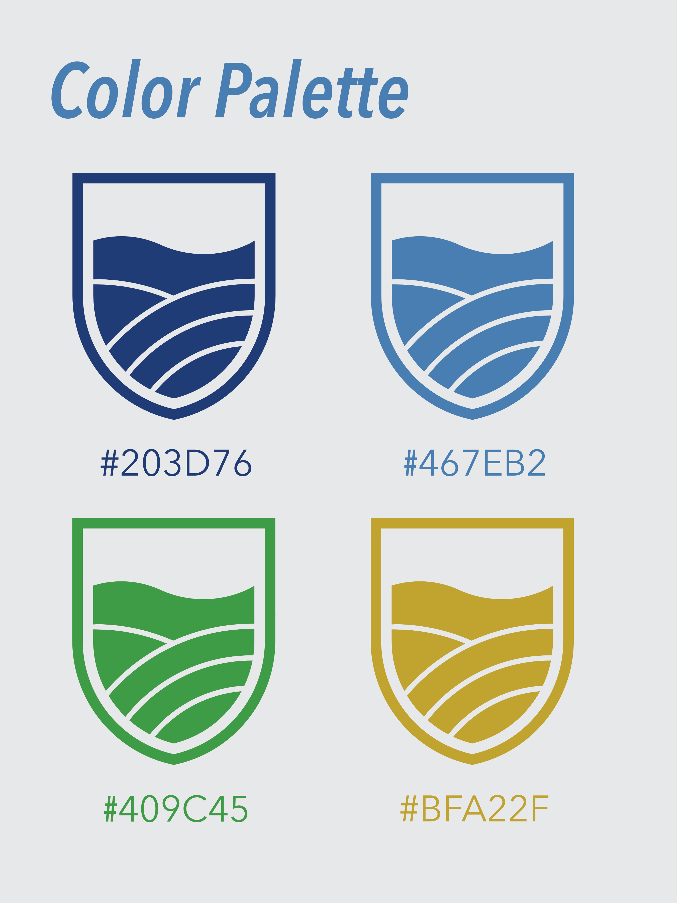
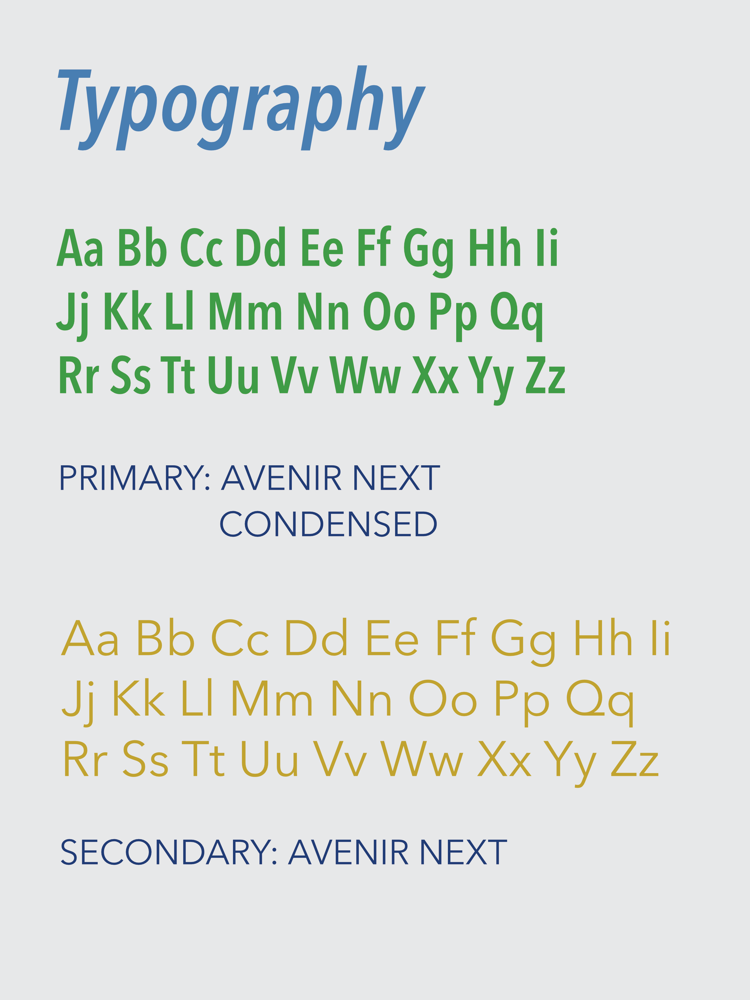
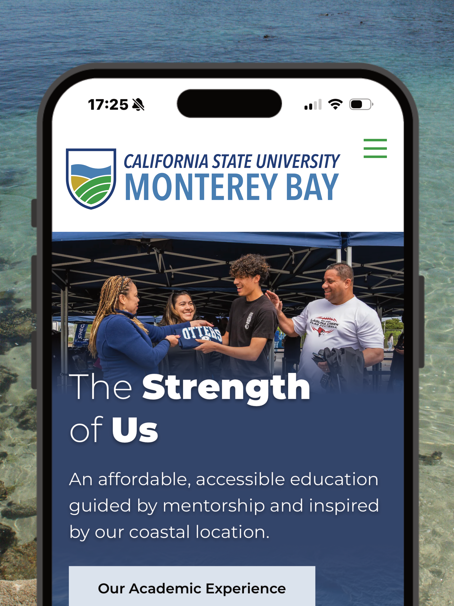
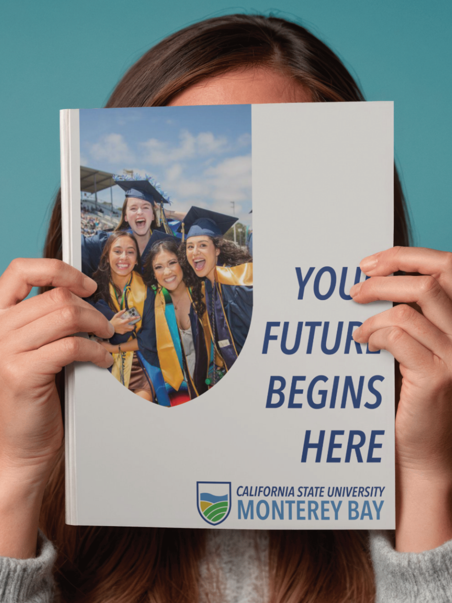
Design for Safety
Visual thinking • Creative Problem Solving • Graphic Design • Environmental Design

ABOUT THE PROJECT
There has been an observed decrease in students walking or biking to schools in the Monterey County. We worked with the Transportation Agency of Monterey County (TAMC) to plan and design new strategies to decrease morning traffic, push safer driving practices, and encourage healthy activities for the students. Partner June Mattson and I worked to provide a three stage plan that allowed for flexible budgets, time constraints and government restrictions.
TOOLS
Adobe Illustrator, Adobe Photoshop, Procreate
DURATION
Six Weeks
TARGET AUDIENCE
It was observed that parents were often harder to reach directly due to a plethora of external responsibilities. As a result the the campaign shifted directions to target the students, giving them the resources and support to build safer habits, and act as a vessel to amplify our reach. We still chose to target other drivers on the road as well in order to provide a well rounded strategy to create safer streets.
SOLUTION: PHASE ONE
The first phase focuses on educating students on safe road practices through assemblies. Many organisations already have the information and are willing to attend school assemblies. Information can also be shared through social media and/or email campaigns. Social media can also be used to promote certain walk/ bike to school events which give parents peace of mind knowing that there would be less cars on the road overall due to the schoolwide participation of such events.
Additionally we can use this time to fill up classroom walls with more biking safety infographics. Often times when students are bored they will spend their time looking at the matierial around classrooms, and we can take advantage of this habit by putting educational material on the walls. To make this more fun we can even ask students to design posters to put up. For the eager and artistic moments like this will increase pride.

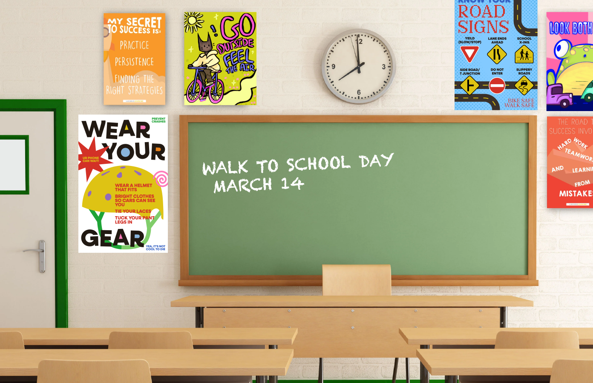
SOLUTION: PHASE TWO
In the second phase we introduce changes to the environment, like painted bike racks, or interchangable poster cases. The poster case would be a great place to add student made artwork that related to road safety. This also helps students develop a sense of pride in their school, encouraging them to participate in social and public work, while keeping parents attentive and slow in the area around the school. Additionally the painted bike racks would be a great way to encourage kids themselves to continue biking to school and hopefully outside of school as well.
SOLUTION: PHASE THREE
If the painted bike racks prove to be a positive element to the campus, we would continue with the final phase of the plan which included painted crosswalks and murals. If the city were to approve, these elements could bring a sense of novelty to the school and remind parents that children would be in the area. It encourages them to drive slower and safer. Additionally, the mural and crosswalk paitning process could involve students, helping them once again feel more connected to the school.
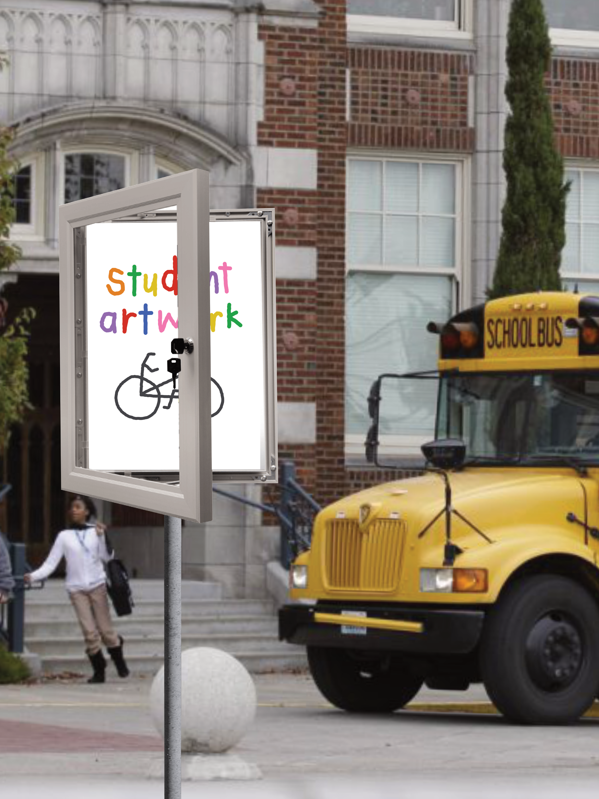
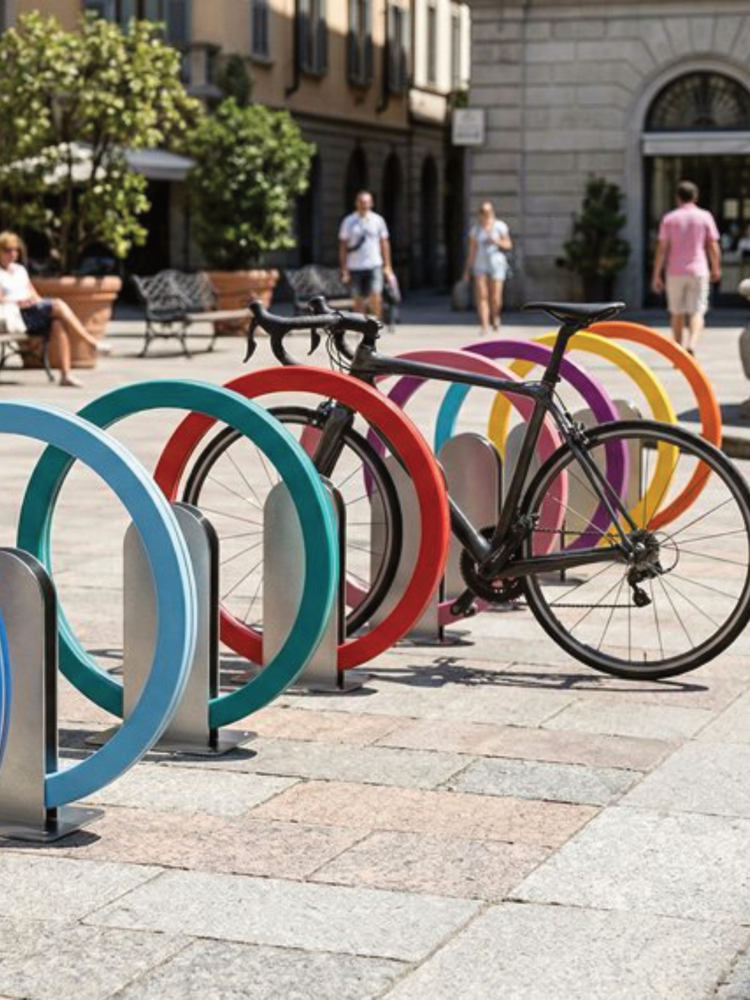
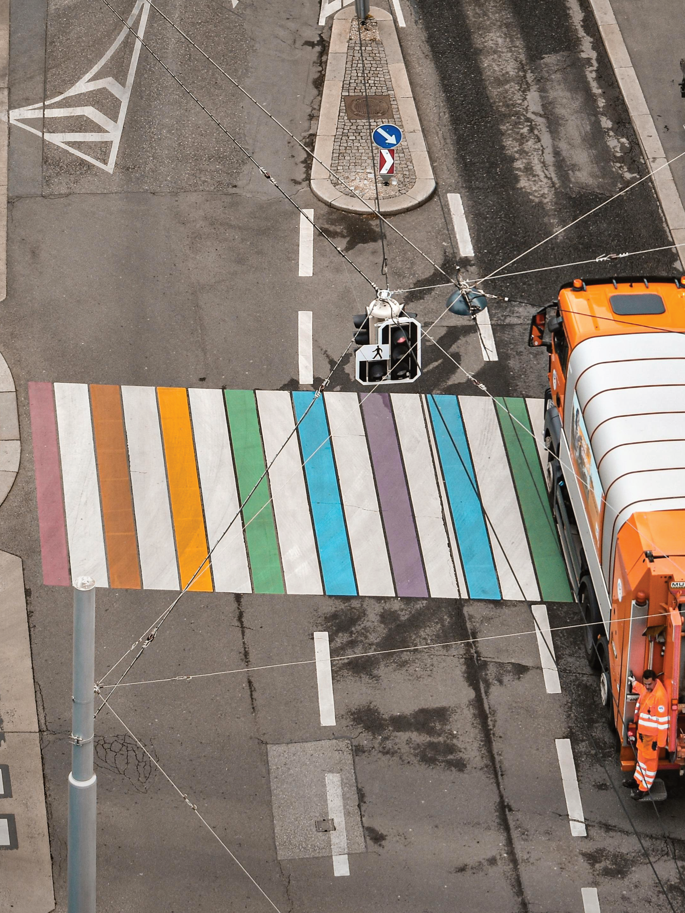
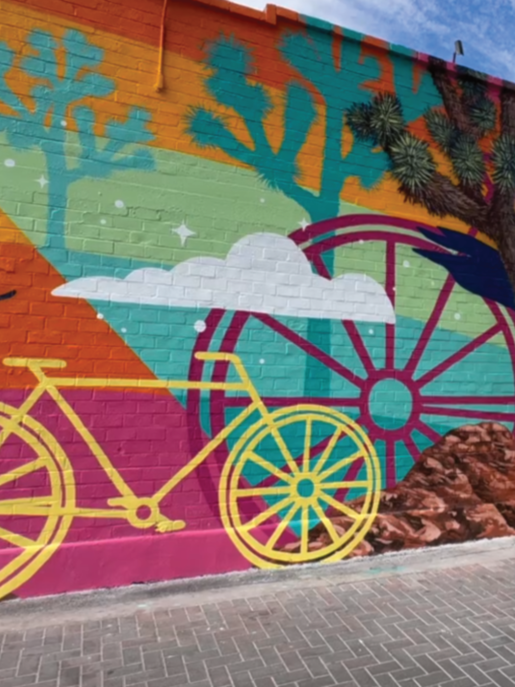
Building Portfolios
Visual thinking • Creative Problem Solving • UI/UX Design • Wireframing • Coding
ABOUT THE PROJECT
Professor Rumela Sen is a professor and researcher at Columbia University where she teaches political science classes. And over the years she has written many papers on civil conflict, rebel governance, state-building, and democratic transitions in the Global South, particularly South Asia. We worked to compile her work into a single website, as well as teaching tools for her students. You can view the site at rumelasen.com.
TOOLS
Figma, Sumblime Text Editor, Github
DURATION
Two Months

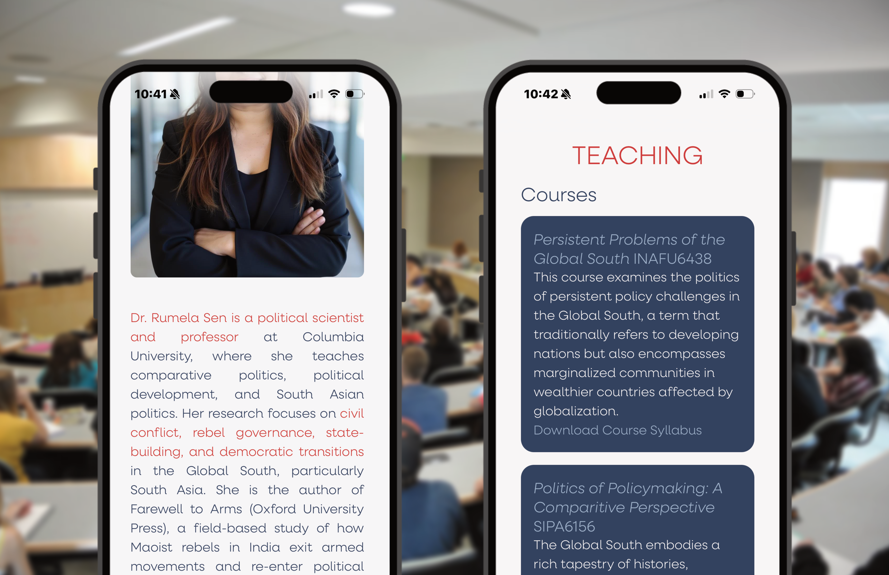
Restaurant Branding
Visual thinking • Creative Problem Solving • Graphic Design • Branding and Identity
ABOUT THE PROJECT
As Professor Lindsey Brammell's student assistant, I worked to redesign the logo for Carmel restaurant, Edwin's Kaona. The owner insisted on including some symbolism of the Philippines. The original Edwin's logo had the sun which is present on the Filipino flag, however I suggested a more subtle direction with the banana leaf, which is a very prominent crop of the country. Beyond that I chose to include the restuarant's minimal, high end feel in my branding choices.
TOOLS
Adobe Illustrator, Adobe Photoshop
DURATION
Three Weeks
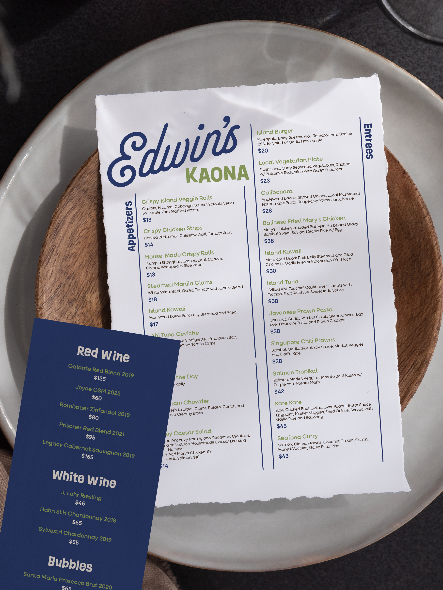
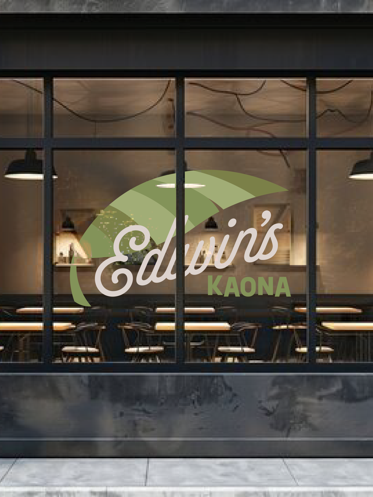
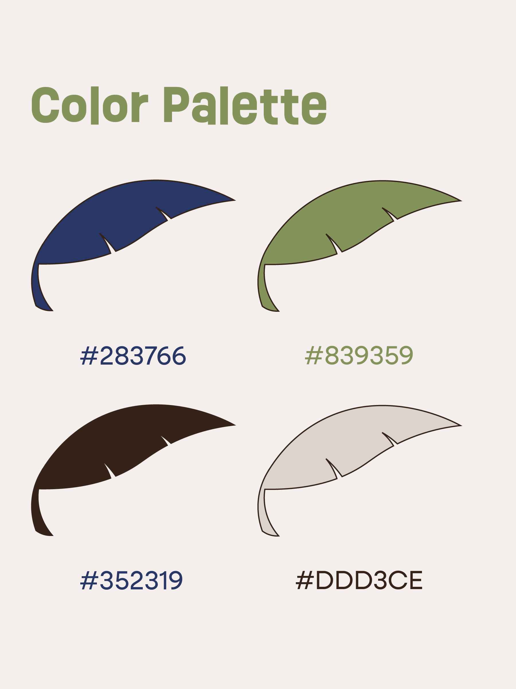
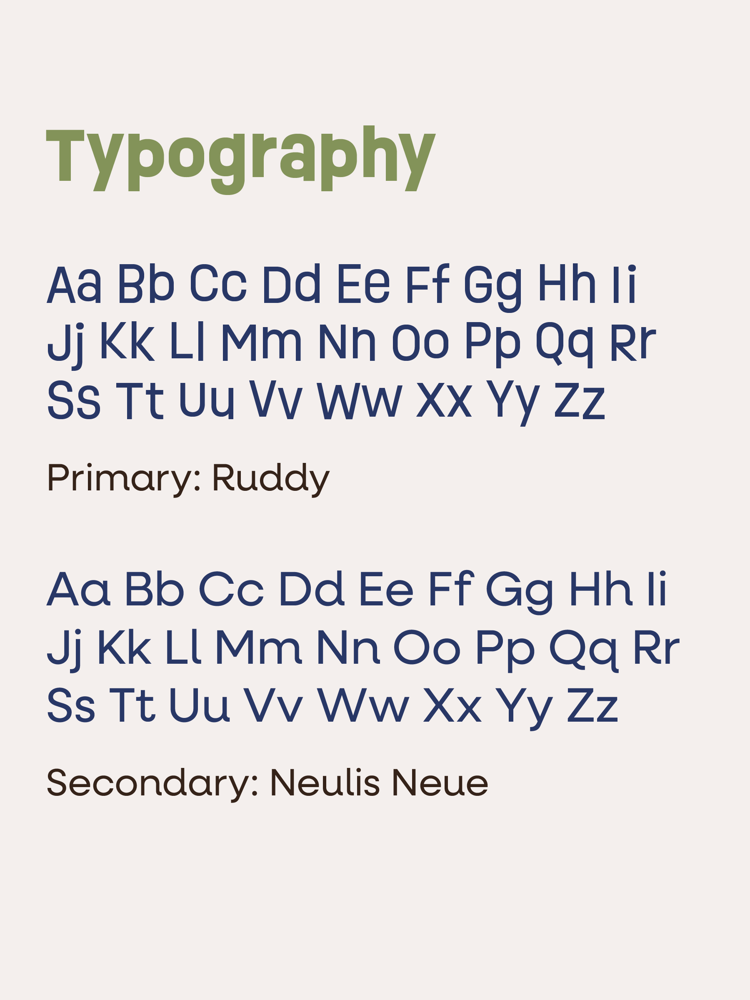